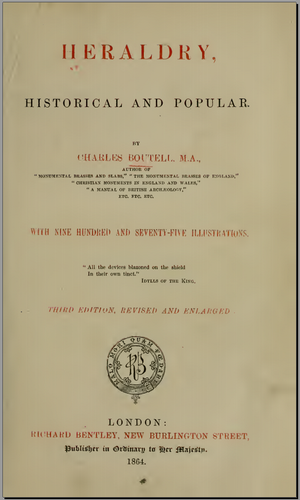

Heraldry Historical and Popular, 3rd Edition, Charles BOUTELL, Richard Bentley, London 1864
Huge amount of information on all aspects of heraldry, including 975 illustrations, many in colour. Generally good reproduction, although the copy is heavily hand-annotated (mostly in the margins). Fully text searchable, OCR accuracy 95%+
Contents (numbers are the PDF Page numbers):
Single volume ( heraldryhistoric01bout ) Prefaces 13 Contents 21 Introduction 25 Blazons 32 Shield Parts 37 Tinctures 45 Ordinaries 47 The Cross 54 Sub-ordinaries 63 Varied Fields 69 Inanimate Objects 77 Animate Beings 95 Natural Objects 116 Descriptive Terms 125 Miscellaneous Names and Titles 138 Marshalling and Inheritance 193 Cadency and Differencing 247 Royal Cadency 340 Badges, Crests, Supporters etc. 378 Flags 419 Royal Heraldry of England 431 Orders of Knighthood 485 Official and Corporate Heraldry 523 Architectural Heraldry 542 Monumental Heraldry 550 Heraldry of Seals and Coins 567 Heraldry of Illuminations 597 Geneaologies 600 Precedence 606 Augmentation and Abatement 611 Modern Heraldry 617 Heraldic Treatment 626 Examples 640 Foreign Heraldry 648 Supplement (inc Addenda) 665 List of Plates 677 List of Illustrations 680 Index 691